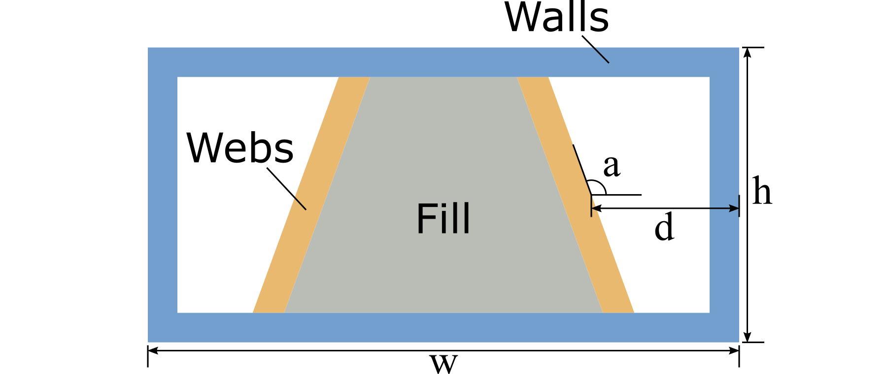
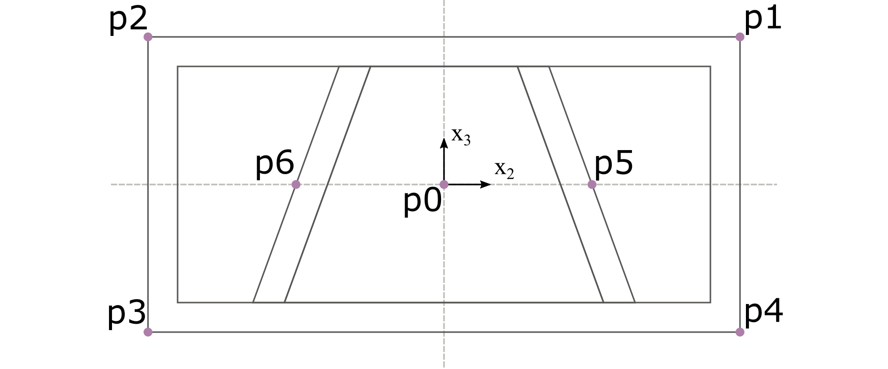
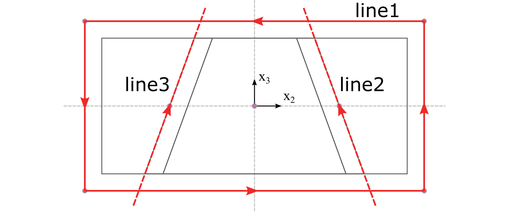
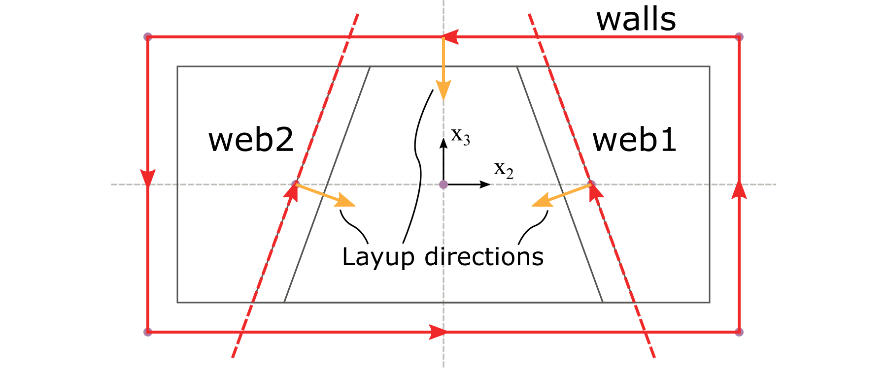
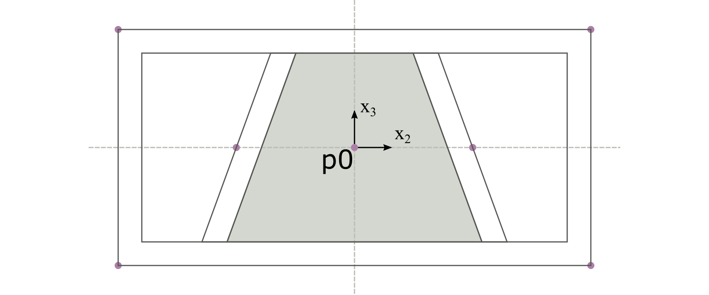
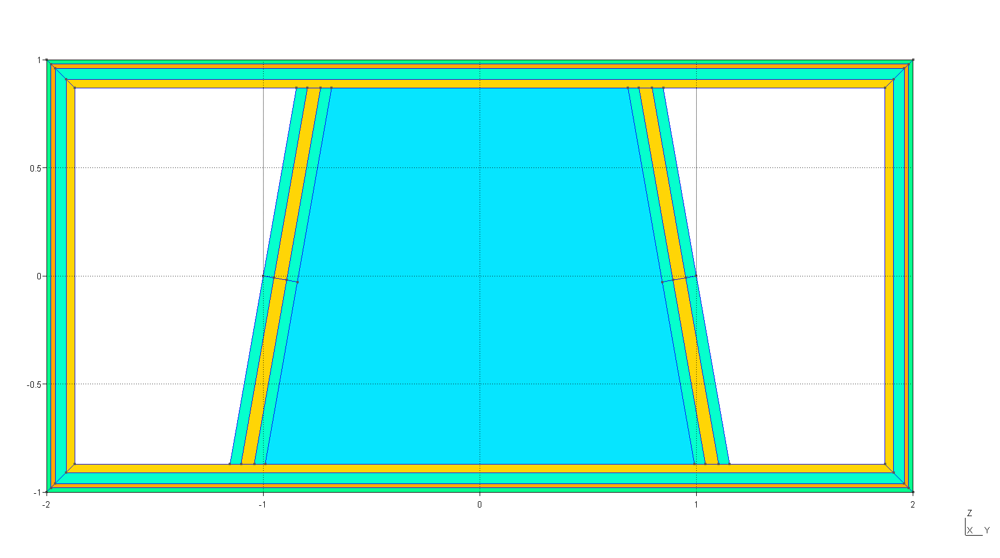

Tutorial#
This tutorial demonstrates how to prepare a PreVABS input file from a cross-section design.
Cross-section design#
{kind=link}

Figure 8 A box-beam cross section.#
This tutorial uses the box-beam cross section shown in Fig. 8. Its four walls and two webs are composite laminates. The webs are symmetric about the vertical centerline and incline toward one another at the top. An isotropic material fills the region enclosed by the top and bottom walls and the two webs.
Four parameters define the overall shape:
Width: \(w = 4\) m
Height: \(h = 2\) m
Distance: \(d = 1\) m
Web angle: \(a = 100^\circ\)
The material properties are listed in Table 1 and Table 2. The laminate layups are listed in Table 3.
Name |
Density |
\(E\) |
\(\nu\) |
|---|---|---|---|
\(\mathrm{kg/m^3}\) |
\(10^3\ \mathrm{Pa}\) |
||
m0 |
1.00 |
25.00 |
0.30 |
Name |
Density |
\(E_{1}\) |
\(E_{2}\) |
\(E_{3}\) |
\(G_{12}\) |
\(G_{13}\) |
\(G_{23}\) |
\(\nu_{12}\) |
\(\nu_{13}\) |
\(\nu_{23}\) |
|---|---|---|---|---|---|---|---|---|---|---|
\(10^3\ \mathrm{kg/m^3}\) |
\(\mathrm{GPa}\) |
\(\mathrm{GPa}\) |
\(\mathrm{GPa}\) |
\(\mathrm{GPa}\) |
\(\mathrm{GPa}\) |
\(\mathrm{GPa}\) |
||||
m1 |
1.86 |
37.00 |
9.00 |
9.00 |
4.00 |
4.00 |
4.00 |
0.28 |
0.28 |
0.28 |
m2 |
1.83 |
10.30 |
10.30 |
10.30 |
8.00 |
8.00 |
8.00 |
0.30 |
0.30 |
0.30 |
Component |
Name |
Material |
Ply thickness |
Orientation |
Number of plies |
|---|---|---|---|---|---|
m |
degree |
||||
Walls |
layup1 |
m1 |
0.02 |
45 |
1 |
m1 |
0.02 |
-45 |
1 |
||
m2 |
0.05 |
0 |
1 |
||
m1 |
0.02 |
0 |
2 |
||
Webs |
layup2 |
m2 |
0.05 |
0 |
1 |
m1 |
0.02 |
0 |
3 |
||
m2 |
0.05 |
0 |
1 |
Preparing the input file#
In PreVABS, a cross section consists of laminate and fill components. A laminate component contains one or more segments, each with an assigned layup. A cross section can often be decomposed into components in several ways, and the chosen decomposition determines the information required to build the model.
This example contains four components: one component for the walls, one for each of the two webs, and one for the fill. Their creation order follows their dependencies. The walls define the boundaries that trim the webs, and the walls and webs together enclose the fill region. PreVABS must therefore create the walls first, the webs second, and the fill last, as shown in Fig. 9.
{kind=link}
Figure 9 Order of component creation.#
The design is defined in a self-contained XML file named box.xml. Its
<cross_section> element contains the analysis and meshing settings,
points and baselines, materials and laminae, layups, and components. Keeping
this small example in one file makes the relationships among these
definitions explicit. Larger models can store definitions in separate files;
see Other input settings.
Define the geometry#
As shown in Fig. 10, seven points define the cross-section geometry. Points p1 through p4 define the outer walls, p5 and p6 locate the webs, and p0 identifies the region to fill. The coordinate-system origin is at the center of the rectangle. The coordinates, derived from \(w\), \(h\), and \(d\), are listed in Table 4.
{kind=link}

Figure 10 Key points defining the shape of the cross section.#
Name |
Coordinate |
|---|---|
p0 |
(0, 0) |
p1 |
(2, 1) |
p2 |
(-2, 1) |
p3 |
(-2, -1) |
p4 |
(2, -1) |
p5 |
(1, 0) |
p6 |
(-1, 0) |
The points define the three baselines shown in Fig. 11. Line 1 forms a closed path through p1 -> p2 -> p3 -> p4 -> p1. Line 2 passes through p5 at an angle of 100 degrees, while line 3 passes through p6 at an angle of 80 degrees.
Baseline direction is significant: it determines the side on which each laminate is created and contributes to the definition of each element’s local coordinate system.
The completed geometry section of box.xml is shown in
Listing 10.
{kind=link}

Figure 11 Baselines defining the shape of the cross section.#
1<baselines>
2 <point name="p0">0 0</point>
3 <point name="p1">2 1</point>
4 <point name="p2">-2 1</point>
5 <point name="p3">-2 -1</point>
6 <point name="p4">2 -1</point>
7 <point name="p5">1 0</point>
8 <point name="p6">-1 0</point>
9
10 <line name="line1">
11 <points>p1,p2,p3,p4,p1</points>
12 </line>
13 <line name="line2">
14 <point>p5</point>
15 <angle>100</angle>
16 </line>
17 <line name="line3">
18 <point>p6</point>
19 <angle>80</angle>
20 </line>
21</baselines>
Define the materials and layups#
The <materials> section of box.xml contains both material and lamina
definitions, as shown in
Listing 11. The contents of each
<elastic> element depend on whether the material is isotropic,
orthotropic, or anisotropic.
A lamina combines a material with a ply thickness. The layups in
Table 3 require two laminae: la_m1_002 uses
material m1 with a thickness of 0.02 m, and la_m2_005 uses material m2
with a thickness of 0.05 m. Layup layers reference these laminae rather than
the materials directly.
1<materials>
2 <material name="m0" type="isotropic">
3 <density>1.0</density>
4 <elastic>
5 <e>25.0e3</e>
6 <nu>0.3</nu>
7 </elastic>
8 </material>
9 <material name="m1" type="orthotropic">
10 <density>1.86E+03</density>
11 <elastic>
12 <e1>3.70E+10</e1>
13 <e2>9.00E+09</e2>
14 <e3>9.00E+09</e3>
15 <g12>4.00E+09</g12>
16 <g13>4.00E+09</g13>
17 <g23>4.00E+09</g23>
18 <nu12>0.28</nu12>
19 <nu13>0.28</nu13>
20 <nu23>0.28</nu23>
21 </elastic>
22 </material>
23 <lamina name="la_m1_002">
24 <material>m1</material>
25 <thickness>0.02</thickness>
26 </lamina>
27 <material name="m2" type="orthotropic">
28 <density>1.83E+03</density>
29 <elastic>
30 <e1>1.03E+10</e1>
31 <e2>1.03E+10</e2>
32 <e3>1.03E+10</e3>
33 <g12>8.00E+09</g12>
34 <g13>8.00E+09</g13>
35 <g23>8.00E+09</g23>
36 <nu12>0.30</nu12>
37 <nu13>0.30</nu13>
38 <nu23>0.30</nu23>
39 </elastic>
40 </material>
41 <lamina name="la_m2_005">
42 <material>m2</material>
43 <thickness>0.05</thickness>
44 </lamina>
45</materials>
The <layups> section follows the material definitions, as shown in
Listing 12. Layer order defines the
stacking sequence outward from the baseline. The text inside each <layer>
element specifies the ply angle in degrees. A value after a colon specifies
the number of plies; for example, 0:3 represents three 0-degree plies.
An empty element represents one 0-degree ply.
1<layups>
2 <layup name="layup1">
3 <layer lamina="la_m1_002">45</layer>
4 <layer lamina="la_m1_002">-45</layer>
5 <layer lamina="la_m2_005">0</layer>
6 <layer lamina="la_m1_002">0:2</layer>
7 </layup>
8 <layup name="layup2">
9 <layer lamina="la_m2_005"></layer>
10 <layer lamina="la_m1_002">0:3</layer>
11 <layer lamina="la_m2_005"></layer>
12 </layup>
13</layups>
Define the components#
PreVABS supports laminate and fill components. This example has three laminate components (the walls and two webs) and one fill component. Dependencies specify which components must exist before another component can be created.
Each laminate component contains one or more segments. A segment combines a
baseline with a layup. The direction attribute places the layup on the
left or right side of the baseline, as viewed while moving in the
baseline direction. The default is left. This convention is illustrated
in Fig. 12.
The walls must be created first because their inner boundary trims both web baselines. Each web therefore depends on the wall component, as shown in Listing 13.
{kind=link}

Figure 12 Layup directions for each segment.#
1<component name="walls">
2 <segment>
3 <baseline>line1</baseline>
4 <layup>layup1</layup>
5 </segment>
6</component>
7<component name="web1" depend="walls">
8 <segment>
9 <baseline>line2</baseline>
10 <layup>layup2</layup>
11 </segment>
12</component>
13<component name="web2" depend="walls">
14 <segment>
15 <baseline>line3</baseline>
16 <layup direction="right">layup2</layup>
17 </segment>
18</component>
The fill component is defined by a point and a material. Point p0 identifies the enclosed central region, and material m0 fills that region. Because the walls and both webs bound the region, the fill depends on all three laminate components, as shown in Listing 14.
{kind=link}

Figure 13 The fill-type component.#
1<component name="fill" type="fill" depend="walls,web1,web2">
2 <location>p0</location>
3 <material>m0</material>
4</component>
Set the analysis and meshing options#
In addition to the geometry, materials, layups, and components, the input file contains analysis and meshing settings.
The optional <analysis> section configures the VABS cross-sectional
analysis. In this example, <model>1</model> selects the Timoshenko beam
model and produces a 6-by-6 stiffness matrix.
The optional <general> section configures the geometry and mesh. This
example uses a target mesh size of 0.04 and linear quadrilateral elements.
The complete cross-section input file is shown in Listing 15.
1<cross_section name="box">
2
3 <analysis>
4 <model>1</model>
5 </analysis>
6
7 <general>
8 <mesh_size>0.04</mesh_size>
9 <element_shape>quad</element_shape>
10 <element_type>linear</element_type>
11 </general>
12
13 <baselines>
14 <point name="p0">0 0</point>
15 <point name="p1">2 1</point>
16 <point name="p2">-2 1</point>
17 <point name="p3">-2 -1</point>
18 <point name="p4">2 -1</point>
19 <point name="p5">1 0</point>
20 <point name="p6">-1 0</point>
21
22 <line name="line1">
23 <points>p1,p2,p3,p4,p1</points>
24 </line>
25 <line name="line2">
26 <point>p5</point>
27 <angle>100</angle>
28 </line>
29 <line name="line3">
30 <point>p6</point>
31 <angle>80</angle>
32 </line>
33 </baselines>
34
35 <materials>
36 <material name="m0" type="isotropic">
37 <density>1.0</density>
38 <elastic>
39 <e>25.0e3</e>
40 <nu>0.3</nu>
41 </elastic>
42 </material>
43 <material name="m1" type="orthotropic">
44 <density>1.86E+03</density>
45 <elastic>
46 <e1>3.70E+10</e1>
47 <e2>9.00E+09</e2>
48 <e3>9.00E+09</e3>
49 <g12>4.00E+09</g12>
50 <g13>4.00E+09</g13>
51 <g23>4.00E+09</g23>
52 <nu12>0.28</nu12>
53 <nu13>0.28</nu13>
54 <nu23>0.28</nu23>
55 </elastic>
56 </material>
57 <lamina name="la_m1_002">
58 <material>m1</material>
59 <thickness>0.02</thickness>
60 </lamina>
61 <material name="m2" type="orthotropic">
62 <density>1.83E+03</density>
63 <elastic>
64 <e1>1.03E+10</e1>
65 <e2>1.03E+10</e2>
66 <e3>1.03E+10</e3>
67 <g12>8.00E+09</g12>
68 <g13>8.00E+09</g13>
69 <g23>8.00E+09</g23>
70 <nu12>0.30</nu12>
71 <nu13>0.30</nu13>
72 <nu23>0.30</nu23>
73 </elastic>
74 </material>
75 <lamina name="la_m2_005">
76 <material>m2</material>
77 <thickness>0.05</thickness>
78 </lamina>
79 </materials>
80
81 <layups>
82 <layup name="layup1">
83 <layer lamina="la_m1_002">45</layer>
84 <layer lamina="la_m1_002">-45</layer>
85 <layer lamina="la_m2_005">0</layer>
86 <layer lamina="la_m1_002">0:2</layer>
87 </layup>
88 <layup name="layup2">
89 <layer lamina="la_m2_005"></layer>
90 <layer lamina="la_m1_002">0:3</layer>
91 <layer lamina="la_m2_005"></layer>
92 </layup>
93 </layups>
94
95 <component name="walls">
96 <segment>
97 <baseline>line1</baseline>
98 <layup>layup1</layup>
99 </segment>
100 </component>
101 <component name="web1" depend="walls">
102 <segment>
103 <baseline>line2</baseline>
104 <layup>layup2</layup>
105 </segment>
106 </component>
107 <component name="web2" depend="walls">
108 <segment>
109 <baseline>line3</baseline>
110 <layup direction="right">layup2</layup>
111 </segment>
112 </component>
113 <component name="fill" type="fill" depend="walls,web1,web2">
114 <location>p0</location>
115 <material>m0</material>
116 </component>
117
118</cross_section>
Run PreVABS and review the results#
Run the following command to build and homogenize the cross section:
prevabs -i box.xml --hm -v -e
PreVABS calls Gmsh to generate and display the cross-section mesh, then calls
VABS to perform the homogenization analysis. The resulting cross section is
shown in Fig. 14; element edges are hidden
for clarity. VABS writes the effective beam properties to box.sg.K. The
effective Timoshenko stiffness matrix from that file is reproduced in
Table 5.
{kind=link}

Figure 14 The cross section created by PreVABS and plotted by Gmsh.#
3.991E+10 |
-1.563E+05 |
1.321E+00 |
4.222E+07 |
-5.830E+03 |
4.373E+01 |
-1.563E+05 |
6.747E+09 |
-1.726E+02 |
-2.919E+08 |
-1.586E+07 |
4.747E+01 |
1.321E+00 |
-1.726E+02 |
6.172E+09 |
-1.159E+03 |
-1.404E+01 |
-8.872E+06 |
4.222E+07 |
-2.919E+08 |
-1.159E+03 |
1.973E+10 |
2.742E+05 |
-3.599E+01 |
-5.830E+03 |
-1.586E+07 |
-1.404E+01 |
2.742E+05 |
2.173E+10 |
6.369E+01 |
4.373E+01 |
4.747E+01 |
-8.872E+06 |
-3.599E+01 |
6.369E+01 |
6.728E+10 |